Everything a developer needs to build the redesigned /news page, extend the same language across the site — Home, Our Values, Worship, Ministries and the rest — and ship the block editor controls behind it. Screens, specifications, behavior, data sources, and a build order.
KICKOFF_PROMPT.md and let it read the rest.That prompt points the agent at CLAUDE_CODE_BRIEF.md, which carries the same specification as a phased build plan — with a Phase 0 list of the six things to verify against the repo before writing code, acceptance criteria per phase, and the gaps that were authored without confirming the repo side. This document stays the visual reference.
Andrew's brief, verbatim: “it just feels dead, and so do all the pages on the site — the editor is helpful, it just all lacks energy.” Nothing is broken. There is simply no photography, no scale, and nothing that moves. Three decisions fix it, in priority order.
Every page opens on a photograph that bleeds edge to edge, with the masthead sitting transparent over it.
64px headlines, not 32px. Bricolage Grotesque for display, Newsreader for reading.
A countdown to the next event, a pulsing “happening next” dot, hover zoom on photos. Restraint is the point.
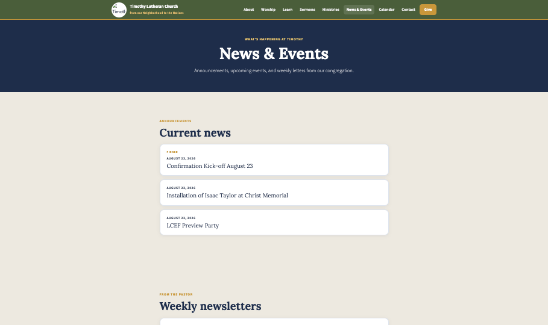
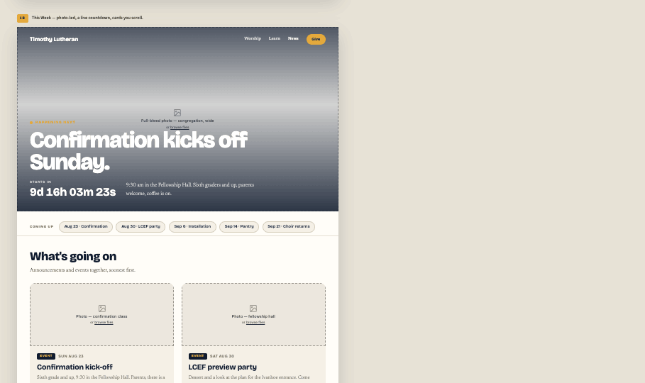
Each page below is a block stack. The numbered list beside each screenshot is the exact order of blocks and the settings they ship with — that is what goes into SITE_PAGES.
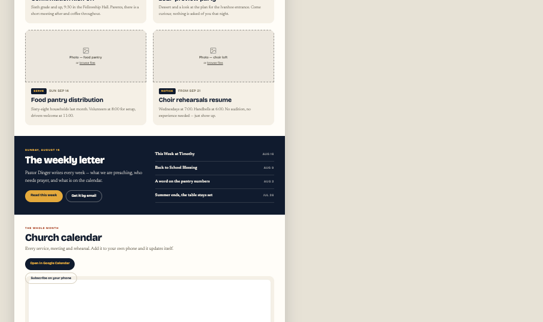
The page the whole language was designed on. Announcements and events live in one feed, soonest first — Andrew chose combined, not split.
9d 20h 11m 13s labelled “STARTS IN” beside an 18px subtitle.Aug 23 · Confirmation), 1px #D8CFBB border on #F5F0E6, hairline under the row.subject / date rows on rgba(245,240,230,.14) hairlines.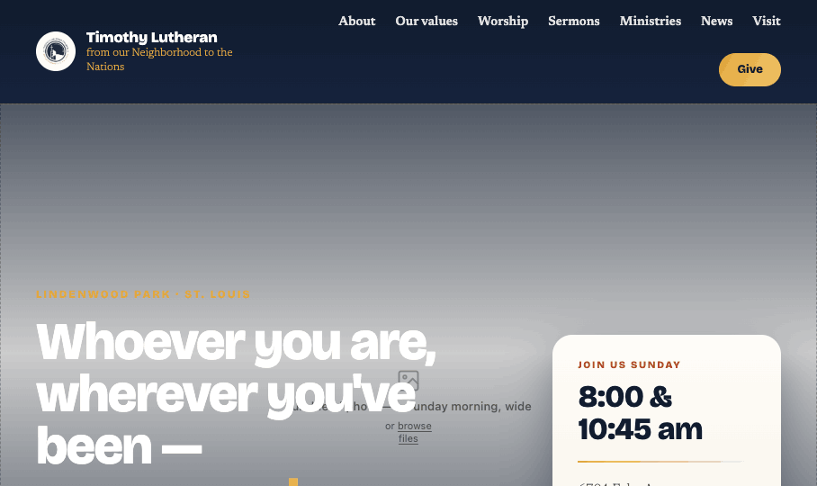
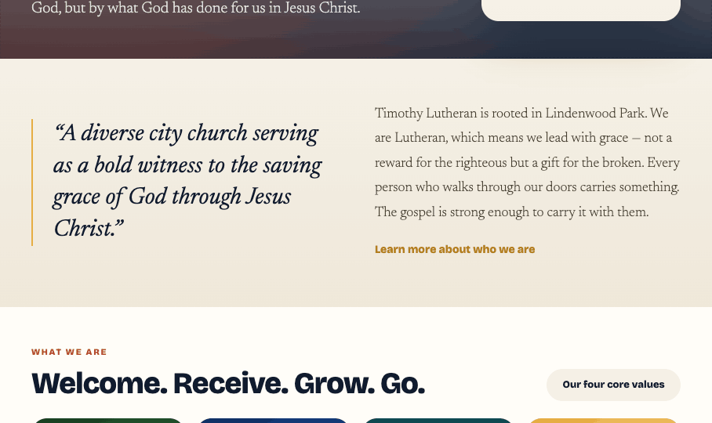
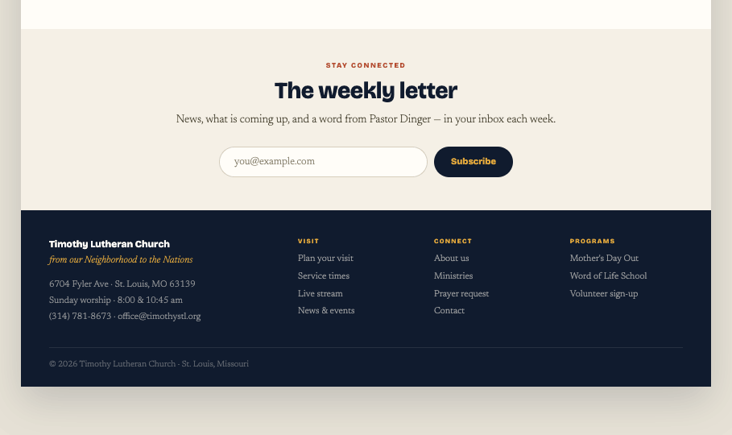
Photo banner with the info card · quote band · core-values strip · sermon card and news list as two half-width blocks side by side · email signup.
<br> lines. At 74px the copy needs ~800px and breaks to four — do not raise it.8:00 & 10:45 am at 32px, hairline, address, navy “Plan your visit” pill. It reads the church-details record (matches CARD_SIDES/CARD_SHOWS).values block at 4 columns, under a “What we are” eyebrow and a 38px heading, with an “Our four core values” paper pill on the right of the heading row. Each card links to its value on the Our Values page.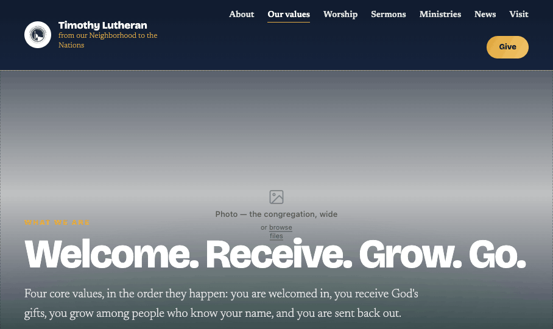
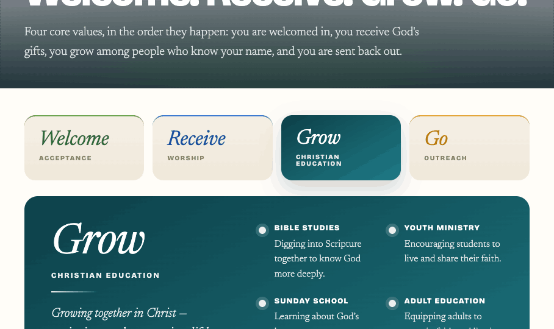
Photo banner (short, no card) · value selector · value panel · one-sheet slot and “why this order” card. Full treatment and the contrast budget are in §04.
rgba(16,27,46,.18) wash. Right: the six ways in, 2-up, each a ring marker plus an uppercase title and one line.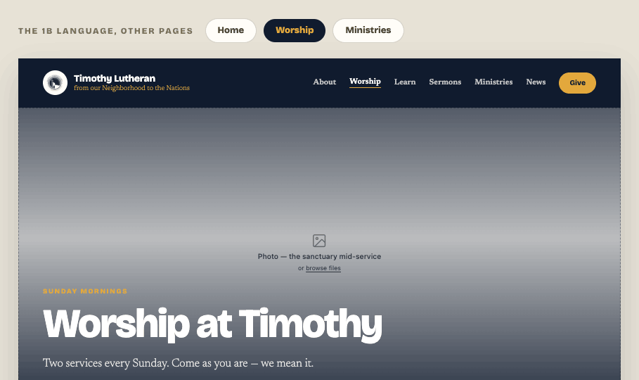
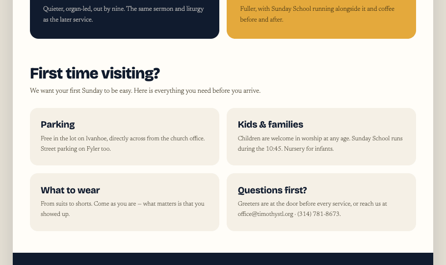
Photo banner (medium, no card) · service times · “First time visiting?” card grid · text + photo band.
8:00 am, gold 10:45 am — each an eyebrow, a 52px numeral, and a one-line note. Self-filling from the service-times record.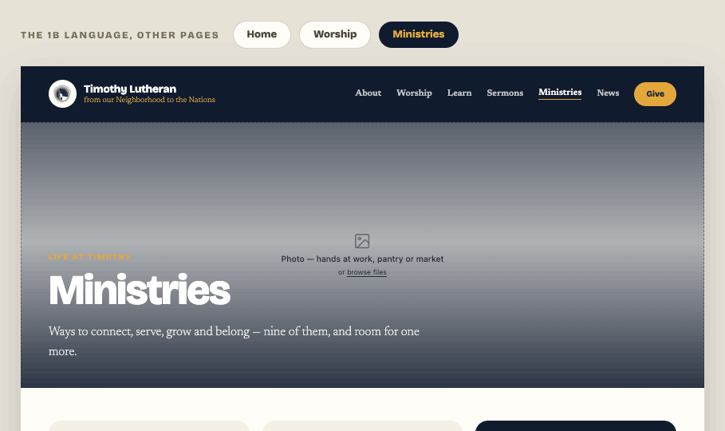
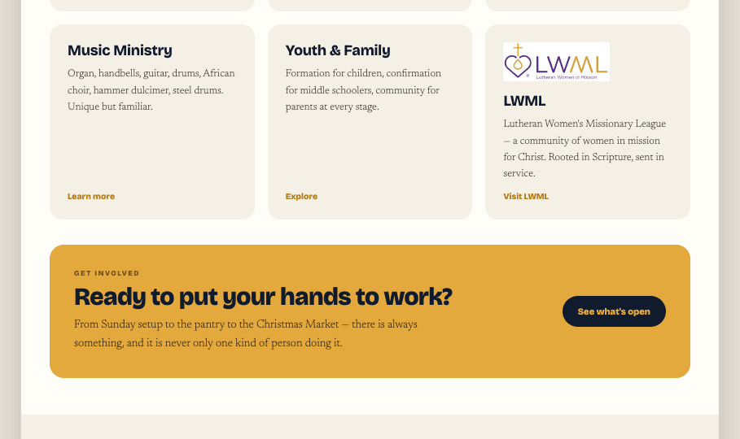
Photo banner (short) · 3-up card grid, nine ministries, logos on, first card featured navy · gold call-to-action band.
public/images/ministries/*.webp and render at their natural aspect inside a 44px-tall box.#3B2E12, body uses Gold ink #3B2E12 — never white.Site Prototype - 1b.dc.html is the functional build — real navigation, real state, real empty and success states. Open it and use it: every behavior below is demonstrated there rather than described. It is the reference for how it works; the block reference is the reference for how it is made.
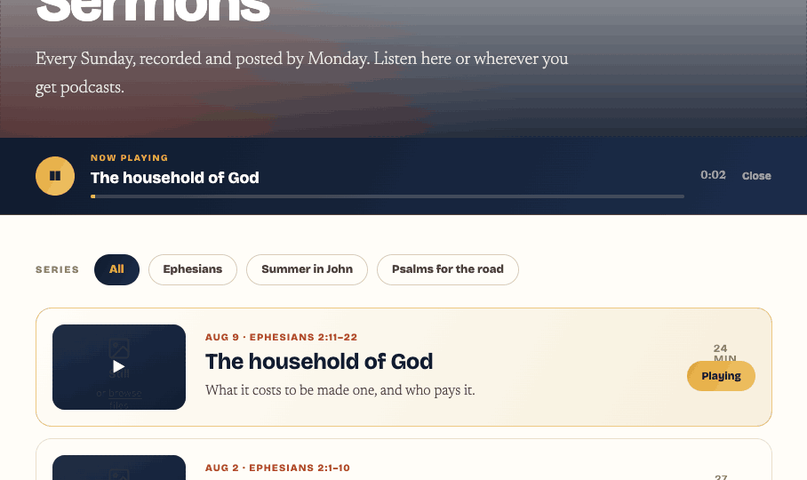
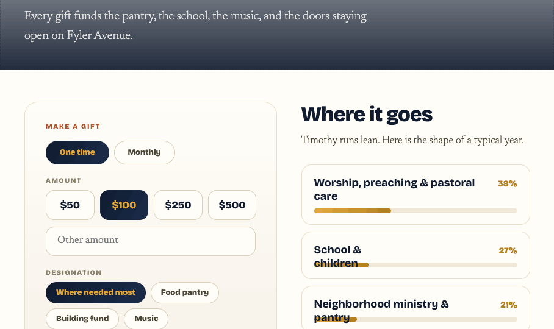
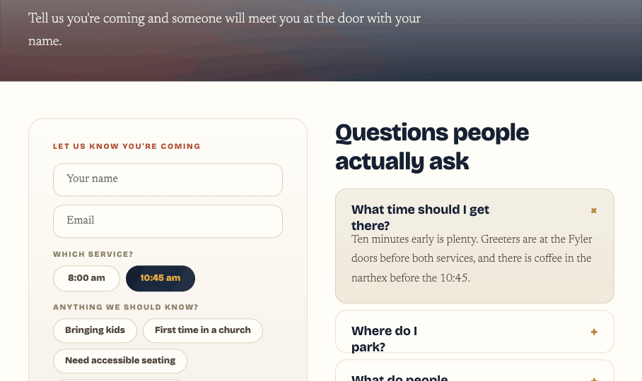
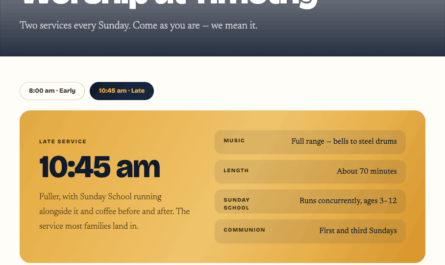
prefers-reduced-motion.The four values already exist as printed one-sheets, each with its own colour, a discipline label, six ways in, and a partner organisation. They are not four posters — they are an arc, and the site should say so: you are welcomed in, you receive God's gifts, you grow among people who know your name, and you are sent back out. Always in that order, never alphabetised, never reordered by the editor.
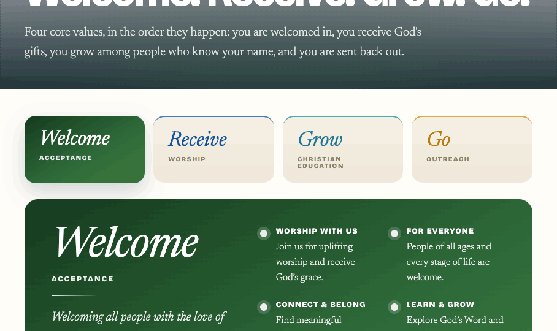
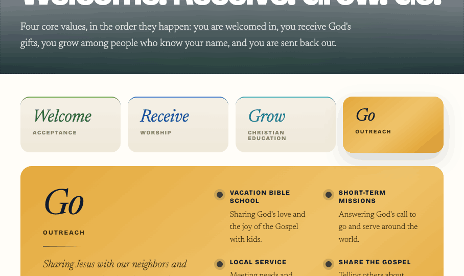
#101B2E word, #3B2E12 everything else. It deliberately uses the same flat, uniformly-light gold as the Ministries CTA band rather than a dark-to-light ramp: a field that travels from #8A5A0C to #E8A93C has no ink that passes at both ends. The other three are dark fields and take white. Each is a gradient field on the same 150° axis as Navy field, so the values read as part of the language rather than an imported brand.values block) that goes on Home and can go anywhere; and the Our Values page, where selecting a card swaps a full panel carrying the tagline, the six ways in, and the partner. The printed one-sheet drops in below as an image, so the web and the rack card sit together.#fff — that is what set Welcome's #3F7A38, Receive's #3266AE and Grow's #1F7A86, all darker than the brand hues they came from. Two more rules that came out of getting this wrong: white ink is near-opaque (.94 body, .88 label) because every point of transparency is a point of contrast; and a translucent panel inside a coloured field uses a dark wash rgba(16,27,46,.18), never a white one, which would lighten the very surface the white text sits on. The brighter brand hues survive as accents on rules and borders, where nothing is set on top of them.values block is self-filling and must not store copies. If no record exists, this is a small one to add and worth adding properly: the same content is wanted on the printed cards, the visitor packet and the school materials.Flat navy and flat sand are a large part of why the old pages read as dead. Every large field in this language now carries a shallow gradient — 6–10% of value across the field, never a hue jump. Two exceptions carry real colour: the hero veils, which pick up a warm radial glow, and the gold band. Copy these declarations verbatim.
#3B2E12 body and #3B2E12 eyebrows — white fails.The chrome is unchanged from the shipped admin design — reuse it exactly. What is new is the canvas, the selection model, the per-block inspector, and half-width pairing.
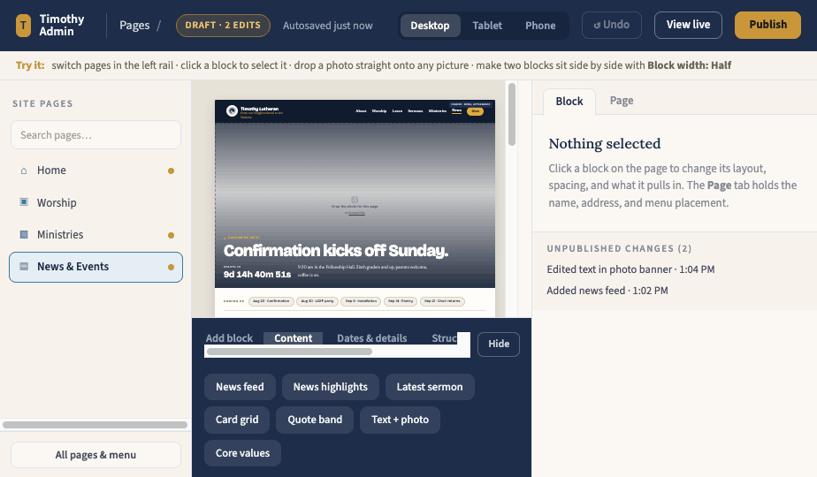
Pages / <page> breadcrumb, status pill (DRAFT · 2 EDITS), autosave label, Desktop/Tablet/Phone segmented control, Undo, “View live”, gold Publish. Below it the sand coach strip, the 216px #F7F3EC site rail, and the 322px inspector.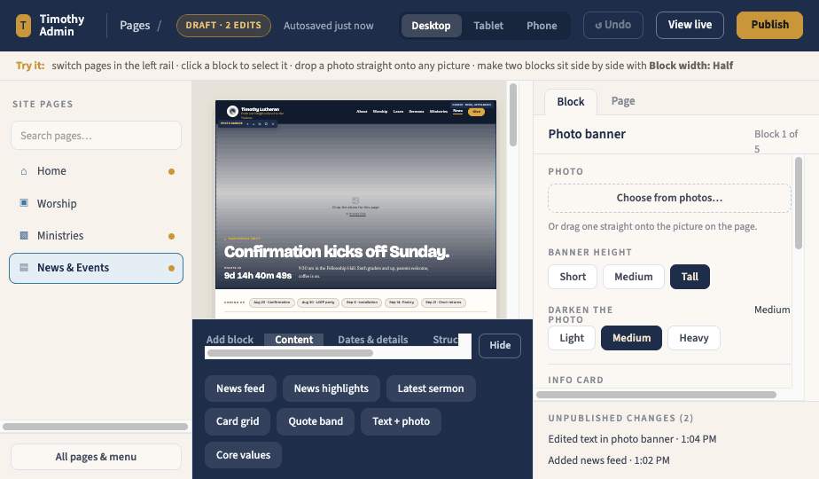
zoom: min(1, available / 1080), measured by a ResizeObserver on the scroll container. max-width:100% is the bug — it reflows 64px type and the editor then lies about the page.rgba(30,45,74,.86) chip: “Header · Menu, Appearance”, “Footer · Menu, Footer columns”.Block width: Full / Half. Two consecutive halves make one row, left then right; a third starts a new row; halves collapse to full below 640px. Mirrors the existing .tlcb-pair grid rule.Left rail, News & events. Click the banner: toolbar and inspector appear. Either drag a JPEG straight onto the picture in the canvas, or use Choose from photos… in the inspector. The photo lands, the veil stays at Medium, and the change log gains “Replaced banner photo · 2:14 PM”. Publish turns the status pill from DRAFT to LIVE and toasts Published to timothystl.org/news.
Select the sermon block, then Block width: Half. It shrinks to the left column and the next block is pulled up beside it automatically. Setting the news list to Half too locks the pair. Moving either one with ↑ ↓ breaks and re-forms rows by the same left-to-right rule — no drag targets, no empty columns.
Eyebrow, title, subtitle and body are contenteditable in the canvas; edits commit on blur, each committed edit appending one line to the change log (“Edited banner heading · 2:14 PM”). Undo pops a JSON snapshot of the whole page set — it is page-set-wide on purpose, so an undo after a page switch still does the expected thing.
{
pageId, // 'home' | 'worship' | 'ministries' | 'news'
pages: { id: { title, slug, glyph, menu, wide, draft, blocks[] } },
selected, // block id or null
tab, // 'block' | 'page'
viewport, // 'desktop' 1080 | 'tablet' 820 | 'phone' 420
paletteOpen, group, // bottom tray
changes[], // human-readable log lines, newest first
history[], // JSON snapshots for Undo
toast, avail, countdown // measured canvas width; ticking clock
}
admin/blocks.jsOne place turns a block into HTML — renderInner() — and both the public site and the editor canvas render through it, which is why they can never drift. Each type below needs a def, a renderer branch, BLOCK_CSS, and inspector fields.
ctx.data. newsfeed, chips, letter, sermon, servicetimes, values and ministry cards must never store copies — that is what keeps a published page from going stale.align: true and the standard spaceAbove/spaceBelow defaults, and sanitizeBlock must gate the new fields exactly as it gates url. Spacing keeps the existing guardrail: 8px steps, 0–96.These values were authored, not sampled — recreate them exactly. Add them as new custom properties in public/styles.css; existing tokens (--steel, --amber, --warm) stay for pages not yet converted.
Two families, both Google Fonts: Bricolage Grotesque (display + UI, weights 600/700/800) and Newsreader (body + quotes, 300/400 italic/600). The admin chrome keeps Source Sans 3 + Lora; only the canvas uses the new pair.
0 24px 60px rgba(16,27,46,.18)) is an artifact of showing a page inside a desk. Do not ship it.Nd HHh MMm SSs, tabular numerals, 1s tick. The row hides entirely when countdown is off.prefers-reduced-motion gates the pulse, hover zoom and card lift. Not implemented in the mocks — add it.aria-live="off" and a static text alternative (“Starts Sunday, August 23”).public/styles.css.photobanner, cta, signup, highlight in admin/blocks.js — defs, renderInner() branches, BLOCK_CSS. All four are self-contained with no data dependency.quote, chips, letter, values — all four need Phase 0 findings first.cards — extends the existing cardgrid with logos and feature. Then extend newsfeed, calendar, servicetimes, textphoto./news in admin/site-pages.js, publish, then delete the hardcoded #page-news markup from public/index.html — deletion lags publication by a few weeks, per the repo's rule.CLAUDE_CODE_BRIEF.md; if the two ever disagree, the brief wins.Open any .dc.html straight in a browser — no build, no server. Photo drops are local to the prototype. The prototypes are design references: do not port their React structure; build the specifications above into the repo's own patterns.
Photography still needed: Home — a Sunday morning, wide; Worship — the sanctuary mid-service; Ministries — hands at work; News — the coming event; plus the sermon still, the music photo, and one per feed card. Roughly eight to start.